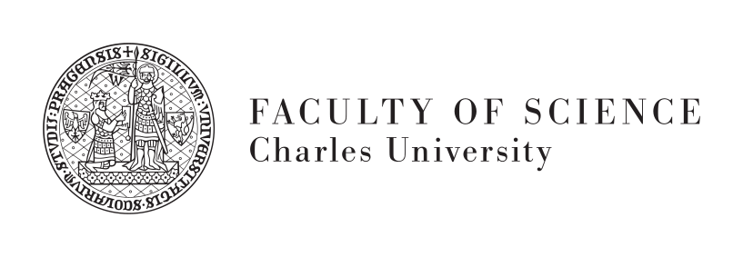
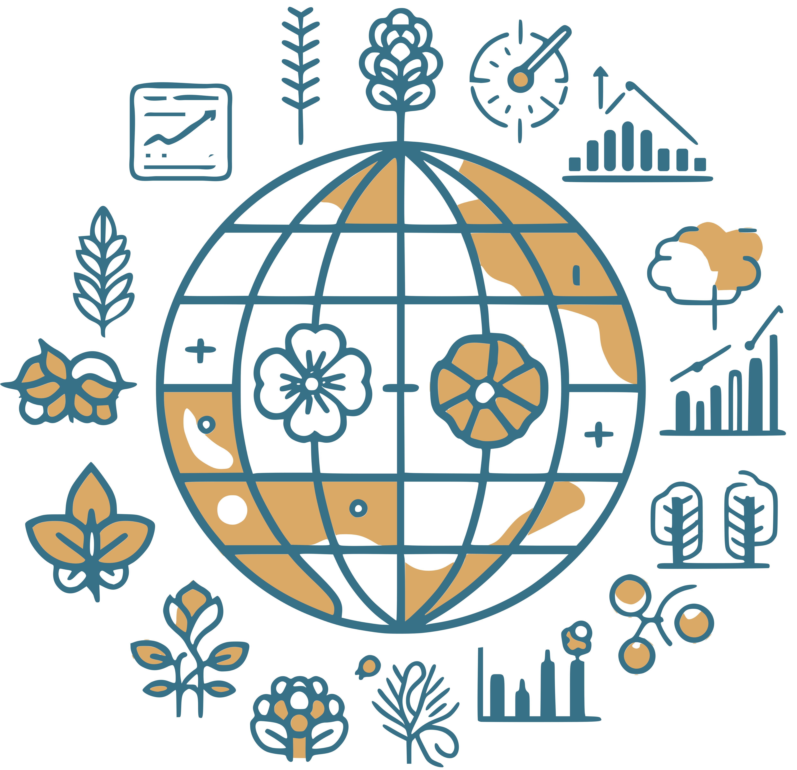

Looking for a new PhD student!
Exploring the Past, Shaping the Future: A full-time PhD position in Global Vegetation Biodiversity (Prague, 4 years, starting October 2024)
Are you passionate about unraveling the mysteries of our planet’s biodiversity using large data and statistics? I offer a fully funded, full-time PhD position in a field spanning macroecology, palaeoecology, biodiversity science, and quantitative ecology. The candidate will join my newly established Laboratory of Quantitative Ecology at the Department of Botany at the Faculty of Sciences, Charles University in Prague, Czech Republic.

About the team
My lab is fascinated by macroecology, palaeoecology, and biodiversity science. I focus on exploring spatio-temporal patterns of vegetation biodiversity, with a commitment to interdisciplinary research and a focus on human-impact.
Project in detail
Holocene Diversity Trends: Quantifying Global Vegetation Biodiversity Changes since the Last Glacial Maximum
This project aims to unveil macroecological patterns shaping global biodiversity, emphasizing the necessity of understanding historical developments for accurate forecasting. In the face of the ongoing biodiversity crisis, comprehending drivers influencing biodiversity over time becomes crucial for mitigating human impacts on the environment.
Focusing on long-living species, such as trees, requires a long-term perspective with data spanning millennia. Palaeoecological research, particularly fossil pollen records, serves as an exceptional source, offering detailed vegetation history over these extensive timescales. Leveraging cutting-edge advancements in quantitative palaeoecological methods, data science, and machine learning, the project will explore multiple facets of biodiversity (taxonomic, functional, and phylogenetic) spanning various spatial scales (biomes, subcontinental, continents, global), encompassing the period since the Last Glacial Maximum.
Despite existing regional studies on taxonomic diversity changes in past vegetation, a holistic global multi-faceted synthesis is lacking, hindering a holistic understanding of vegetation dynamics. Hence, taking advantage of the increasing availability of public data, the project aims to estimate vegetation changes globally.
The interdisciplinary nature of this work fosters a valuable resource for macroecologists, palaeoecologists, and ecoinformatics. By advancing comprehension of global biodiversity patterns and their historical drivers, this project contributes pivotal knowledge for predicting ecological responses to global change.

I offer
- A fully funded, full-time PhD position
- Full medical insurance and social security
- Support for settling in a foreign culture and language environment
- A tax-free PhD stipend of 20,500 CZK/month (ca 830 EUR as of Jan 2024).
- I hope to be able to acquire additional funding during the PhD
- State-of-the-art scientific and computing equipment, software, and access to journals and scientific databases.
- Access to my worldwide network of collaborators
- Subsidized meals at the university canteen
- Work in an inspiring academic international environment (the working language is English)
- Working in the hearth of Prague city center. Prague, while being culture-rich, is still one of the safest cities in the world, with excellent public transport, international accessibility, and healthcare (read more about living in Prague)
I require
- A master or equivalent degree/diploma in a project-related field (e.g., ecology, geography, palaeoecology, botany, bioinformatics, biostatistics, environmental sciences). However, I also encourage holders of degrees in statistics, data science, or computer science to apply
- Proficiency in spoken and written English
- Motivation to learn new skills
- Enthusiasm for team building and collaboration
Desirable but not required:
- Prior experience with programming (using R, Python, C#, etc)
- Solid background in data analysis and statistical testing
- Experience from an international working environment
Applications
! Application deadline is 13th of March 2024 !
The application process has 2 stages:
- Your application needs to be submitted via STARS portal
The STARS is a framework to attract the best students from abroad, as well as from the Czech Republic, to ensure excellent education and an adequate income to PhD students. More info can be found on website
Send an email to ‘ondrej.mottl@natur.cuni.cz’ with “PhD application [your surename]” in the email subject, containing:
- Motivation letter (1-2 pages) describing your expertise and research interests, stating why you see yourself as a good fit for my group/team, and why are you interested in getting a PhD.
- Contact details for 2-3 academic referees, e.g. your former supervisor, boss, or collaborator.
Note that additional materials such as your theses, manuscripts, diplomas, or certificates may be requested later on, so make sure to prepare all relevant documents prior.